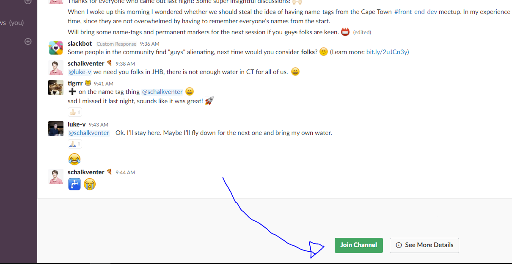

Join remotely
← Return to Homepage
Overview
Slack is a real-time web-based chat program that connects communities. You can either use it in your browsers or download the desktop/mobile app.
Our '#tech-for-good' channel is part of 'ZA Tech', a larger Slack community for those interested/working within the tech field in South Africa.
Instructions
Note: Click on the arrows to view the screenshots associated with the steps.
- Go to: https://www.zatech.co.za
Click on the 'Slack' button to receive an invite to join 'ZA Tech'.
Enter your email address.

You should receive the following email. Continue by pressing the 'Join Now' button.
Fill in your account details, and press the 'Next' button.
Accept the Slack Terms and Conditions

Slack will ask you if you want a little explainer on how to use Slack or if you want to skip the tutorial. Choose either one of these options.
You have now successfully joined ZA Tech! If you want to join or '#tech-for-good' channel you can click on 'Channels' button (The text 'Channels' itself) in the sidebar (this allows you to explore all channels on 'ZA Tech')
Type 'tech-for-good' into the search bar, and click on '#tech-for-good' once it shows up in the results.

You are now viewing our '#tech-for-good' channel. In order join it you can click the 'Join Channel' button on the bottom of the page.
Congratulations you are now part of our '#tech-for-good' channel! You can share resources or questions by using the Message #tech-for-good field at the bottom, followed by the 'enter' key to submit it.
- Finally, in order to return to the '#tech-for-good' channel you can visit https://zatech.slack.com/messages/C7H003QF3/. It might be a good idea to bookmark this in your browser for easy reference.
- That's it! We look forward to hearing from you!